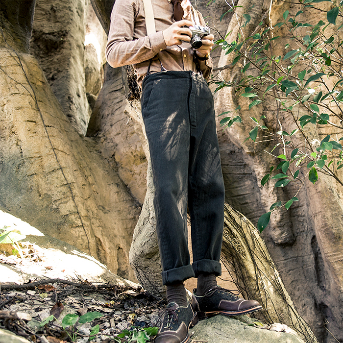

雅痞艺术 | 关于西装，也许你一无所知
欢迎来到木牙Make Unique Young Arts，让我们一起来探索雅痞-重构复古！
“复古是一种印记，不断地重现，却忘了复古的本质：是对现实的不满。未来，从过去和现在中重铸。复古，从旧时代和新世纪中重塑。用复古打破复古，去发现复古，去否定复古，去重构复古，历史的积淀在复古中深刻，未来的创造在复古中迸发， 这，就是SOARIN。”
"Retro is a kind of mark, constantly reappearing, but forgets the essence of retro: discontent with reality.The future recast from the past and the present. Restoring ancient ways, remolding from the old times and the new century.Break the old ways with the old ways.To discover, to deny, to reconstruct.The accumulation of history is profound in restoring ancient ways, and the creation of the future is bursting out in restoring ancient ways.So that's SOARIN."
人的生命最可贵之处是我与別人不同,要找寻自己的人生之路,勇敢活出自我。所谓的活出自我是应该关注于/忠于自己的内心，得到心的安静，明白自己要的什么，追求的是什么。
这就像是我们这一代的年轻人，无论是思想还是衣着，都得到了进一步的的解放。开始自主接受新的事物。雅皮士风貌(yuppie look)兴起于20世纪80年代。而随着中国的近一步发展，21世纪的中国出现了一个新的词汇「Chuppie」。（Chinese & Yuppie）而这种风格更多表现在了服装上。
但是所谓的「Chuppie」没有一个固定的模式，不会刻意追求奢华和所谓的潮流。而是把这种追求投注到了品质上，对于衣服材质，剪裁，搭配更为看重。随着时间和潮流的趋势，对于服饰舒适程度的不断提高，上衣的剪裁和裤腿也出现了各种不同的风格。
怀着对于材料品质的执着和雅痞风格男装的好奇，我们有幸邀请到了SOARIN工作室来到木牙MUYA，来倾听他们对于独立品牌，风格服饰与个性生活的态度，以及他们是如何平衡设计与商业。
SOARIN工作室专注的西装风格有商务（Business），休闲（Leisure），工装（Work Wear），猎装（Hunting），阿美咔叽（Amekaji），格纹（Check），条纹（stripe）


"三个年轻人， 在17岁开始创业，经历了无数次失败，回归最初的小小梦想，抱着共同的爱好：开一家复古男装店。我们选择用服装来传达人生态度。
SOARIN意为翱翔，也许我们做得不是你们认为最正确的事，但是绝对是疯狂的事。世界很大，如果不历经艰辛，如何懂得它的美丽动人。"
"Three young men, starting their own business at the age of 17 and experiencing numerous failures, return to a small, original dream with a common hobby: opening a vintage menswear shop. We choose clothes to convey our attitudes. SOARIN means "soar." We may not be doing what you think is the right thing to do, but it's definitely crazy. The world is big, if not experienced, how to understand its beauty."


"如果不是现在?那会是什么时候？
如果不是我？那会是谁？
这是我经常会问自己的两句话，对于生活，我很喜欢玩，但玩一样东西之前，我会问，这玩意会不会玩一辈子？
如果肯定，我就疯狂去追求，生活，需要多姿多彩，人一生不能被一件事情所困。
所以我爱好很多，复古机车，吉他，黑胶，斯诺克，咖啡等等，我是一个动静并存的人，我也很喜欢阅读，因为没有第二种东西可以让我洞窥这个世界。生活，并不是活着。"
"If not now? When will that be?
If not me? Who could it be?
These are two things That I often ask myself. I like to play with life, but before I play with something, I ask, will I play with it for the rest of my life?
If yes, I will be crazy to pursue. Life needs to be colorful, people can not be trapped by one thing for a long time.
Therefore, I have many hobbies, such as vintage motorcycles, guitars, vinyl, snooker, coffee, etc. I am a person of both movement and movement, and I also like reading, because there is no second thing that can let me peek into the world.
To live is not to live."


➤ 木牙MUYA: 作为男士西装领域的工作室，在推广和运营方面，是如何让越来越多的顾客关注到你们的呢？
As a men's suits studio, how do you get more and more customers' attention in terms of promotion and operation?
SOARIN STUDIO: 我觉得在未来，所有生意都将死绝，唯有文化生生不息。如果每一个客户都能够被我们的文化和服务感染到。
在推广逻辑来说，网络更多说的是高速传播， 我们希望把客户的单位改为1，就是最好的推广方式。而运营的方向在于，我们做的这件事有没有改善客户体验。
We believe in the future, all businesses will perish，only the culture will survive. We wish every customer could be infected by our culture and service. For example, in promotion logic, the network spreads in a high-speed, we wish to change the customer's unit into 1 which is the best way to promote. And the operational direction is what we did to improve the customer experience.
➤ 木牙MUYA: 在工作室成立期间经历过哪些挑战吗？or 在事业困难时期是怎么度过的呢？
Did Soarin studio experience any challenges? Or, What did the studio team do during a difficult period in your career?
SOARIN STUDIO: 创业途中肯定会有很多挑战，例如做了两年淘宝店铺，被迫重新开始。团队产生严重分歧，差点解散公司。工厂严重拖货期，导致几千个客户不及时到货。
还有工厂做货的严重质量问题，还有资金链差点断裂等等。我们内部经常说，一年一大难，多难兴邦，渡过全靠团队每一个的不放弃。
There will be many challenges on the way to starting a business. For example, I was forced to start over after two years of working as a Taobao store. The team had serious disagreements. We nearly dissolved the team. The factory severely delayed production time, causing thousands of customers’ products can not be delivered on time.
There were serious quality problems in the factory, and the capital chain was almost broke, and so on. We often say that much distress regenerates a nation and we made it because of the team bond together and never give up.
➤ 木牙MUYA: 为什么会想独立出来做工作室，是不是想保留自己的独特创意，而不被他人左右？
Why do you want to start an independent men's suit studio? Does it for keeping your own unique creativity or for not being controlled by others?
SOARIN STUDIO: 对，我们想做能够普及并有意义的产品，因为那些快速出现，不必耗费过多努力的大规模生产出来的服装迅速把这件有意义的产品给淘汰掉，我认为不应这样。
Yes, we want to make products that are popular and meaningful. I believe meaningful products should not be eliminated by clothing products that emerge quickly and are produced in a large scale without any effort.
➤ 木牙MUYA: 制作了这么多的作品，哪件或者哪个系列是工作室最喜爱的呢？为什么最喜爱这一系列的呢？
After so many works created, which one or series is the studio's favorite? Why this series is best favorite?
SOARIN STUDIO: 在澳门拍的那期雅痞的感觉很浓郁，一个穿着西装行走在大街上的痞子，无论从内心，与外表，都能完美结合的它
The series in Macau has a strong feeling of the yuppie. A man ruffianly walking on the street in a suit, which can be perfectly combined with both inner and appearance.
➤ 木牙MUYA: 如何选材，对于作品的用料？当作品idea和所需要的材料无法达到想象中的程度时，工作室会如何做出取舍？或者说是把哪一方面放在第一位呢？
How did the studio apply materials? How will the studio make a choice when the idea of the work and the required materials cannot reach the psychological criteria? Or which comes first?
SOARIN STUDIO: 另辟途径，达到设计上想要的效果，一次不行两次，两次不行三次，事在人为。
Find another way to achieve the desired effect in the design. Once failed then twice, twice failed then thrice. It all depends on effort.
➤ 木牙MUYA: 在服装设计和制作的过程中，如何将服饰设计风格与所对应的受众顾客相结合？
During the processing of design and produce, How to combine the fashion design style with the customers?
SOARIN STUDIO:摄取我们需要的元素，结合现代人的穿衣习惯做出改变，创新，针对不同年龄阶段，做出不同的需求设计。例如咖啡师，尽量选择色调相对较暗的， 由于咖啡渍的因素。
Choose the elements we need, make changes and innovations in combination with modern clothing habits, and make different design requirements for different age stages. Baristas, for example, try to choose something that's relatively dark for a barista, because of the coffee stains.

木牙微信订阅号